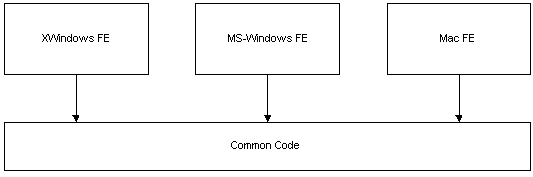
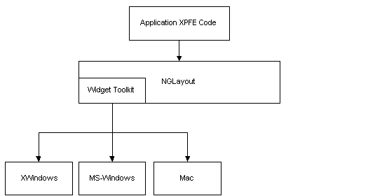
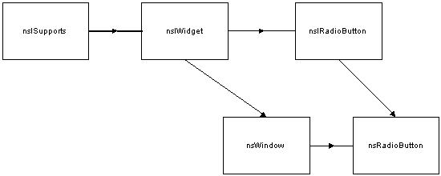

|
|
|
The Widget ToolkitsTable of Contents
IntroductionThe document is intended to be read by those with a familarity with with on or more of the first-tier toolkits and XPCOM.BackgroundThe MS-Windows toolkit was the first widget toolkit developed for Raptor. It was developed just as XPCOM was making its way into Raptor. The original toolkit supported multiple inheriteance of interfaces and XPCOM aggregation (individual widgets were being aggregated with Raptor "views").Just after the X11/Motif toolkit was developed on both IRIX and Linux and the Viewer was up and running, the aggregation of views with widgets was removed from the architecture. This left a lot of baggage in the Windows and Motif implementations. As we started the Mac port of the toolkit we decided to greatly simplify the widget hierarchy and architecture in order to make it easier to maintain the existing toolkits and port to new toolkit down the road. Aggregation was removed and we decided all "widget" interfaces would inherit directly from nsISupports. These issues will be addressed in more depth later.
OverviewIn the past there were three (or more) separate "front-end" code bases developed for the browser, composer, etc. The main toolkits being MS-Windows, X-Windows and Macintosh. A separate graphical user interface or GUI was created with platform specific code. A simple view of the architecture was as follows: As new features were added to the product, this often meant the work had to be done separately for each platform. An advantage to this approach was that platform specific Look & Feel was guarenteed for for the set of common control that existed across platform. It may or may not have been guarenteed for customed widgets developed for each platform. NGLayout is fully based on XPCOM and all implementation exists behind a set of public interfaces. In NGLayout all platform specific code is contained in the Widget and GFX libraries. The GFX library is responsible for graphics and rendering primitives. The Widget library encompasses all windowing and GUI components necessary for creating HTML forms and the GUI interface on given platform. This approach has many advantages:
 The current "test" Viewer application contains platform specific code for application start up and for implementing menus. It continues to be this way today, more for historical reasons than anything else. Recently, the cross-platform Viewer, with Navigator 4.x chrome, was created almost entirely from the widget toolkit interfaces (XPFE). The only exception is application start up and this will soon be cross-platform also. All NGLayout-based applications will be created completely from the
cross-platform set of APIs.
Toolkit RequirementsIn general, the toolkit should be small, fast, and not rely on third party toolkits like MFC.The third party toolkits typically:
Interfaces and InheritanceIn the widget toolkit the nsIWidget interface is responsible for all basic widget functionality. For example, SetBounds, GetBounds, SetEnabled, IsEnabled etc. The nsIXXXWidget interface would specify widget specific behavior. For example, the nsIRadioButton would have an unique "IsChecked" method.On the surface mulitple inheritance of interfaces seems like a very useful approach. On MS-Windows all widgets are windows. If we take a look at a specific example, several issues will emerge. For instance, a nsIRadioButton inherits from nsIWidget. The interface hierarchy could be: nsIWidget->nsIRadioButton. The implementation hierarchy would then be nsWindow->nsRadiobutton.  Here are the issues:
Event ProcessingThe widget toolkit has two personalities. It needs to act as a low-level toolkit inside of NGLayout's layout engine and a high-level toolkit when used for XPFE. This dicotomy constrains how the widgets behave and this affects event processing in several important ways.The most important, is that when the widgets live inside the layout engine they are to do as little as possible, they must dispatch all their events and then wait to be told what to do. JavaScript is a key member in the event processing chain and JS must be able reject certain events if it chooses. For example, when a user clicks on a radiobutton, the radiobutton must
first dispatch the click event and then wait to be told whether it's clicked
or not clicked. The view/frame system or JavaScript determines wether the
radiobutton should process the click event and whether its value should
set or cleared. In many toolkits, radiobutton processing is done automatically,
so in many ways the native toolkit does more than it should.
RoadmapThe widget toolkit has been ported to MS-Windows, Motif, and Macintosh. Others toolkits will follow whether they are developed internall or externally.Currently, most all the widgets are developed from the native platform widgets with the exception of the Toolbar, the Toolbar Manager, the ImageButton, and the MenuButton (a button with an assosicated drop down menu). Overtime we hope to develop many more cross-platform widgets on top
of GFX that will enable developers to provide their own Look & Feel.
These lightweight will not require a back-end native widget.
|
|||||||
| Copyright © 1998 The Mozilla Organization. | ||||||||